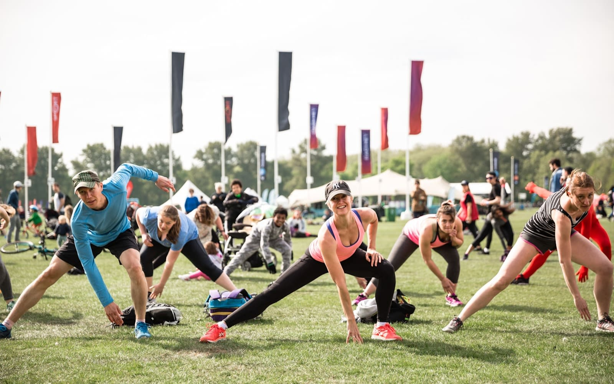

Descubre todas las actividades que podrás disfrutar durante las jornadas universitarias.
Talleres
Los talleres disponibles son:
- Tecnología
- Creación de contenido RRSS
- Inteligencia Artificial (Conferencia de la ponente Laura Martínez)
- Programación
- Ciberseguridad y privacidad (Conferencia del ponente Carlos Fernández)
- CV y LinkedIn
- Habilidades
- Gestión de proyectos
- Educación financiera
- Networking
- Negociación
- Liderazgo
- Entretenimiento
- Artes escénicas
- Karaoke
- Baile
- Vídeo juegos y juegos de mesa
- Fotografía
Consultar horarios de talleres
Deportes
Los deportes disponibles son:
- Individuales
- Natación
- Running
- Calistenia
- Ciclismo
- Equipo
- Fútbol
- Balonmano
- Volley
- Pádel

Consultar horarios de deportes
Cultura
Las actividades culturales disponibles son:
- Patrimonio
- Historia y tradiciones locales
- Gastronomía tradicional
- Oficios
- Literatura y filosofía
- Club de lectura
- Escritura
- Debates filosóficos
- Idiomas e interculturalidad
- Intercambio lingüístico
- Lenguaje de señas
- Gastronomía internacional

Consultar horarios de actividades culturales